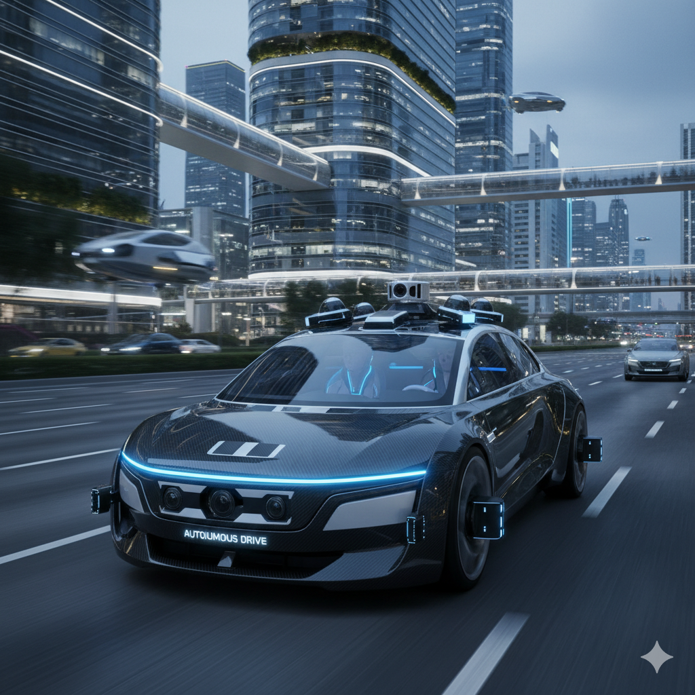
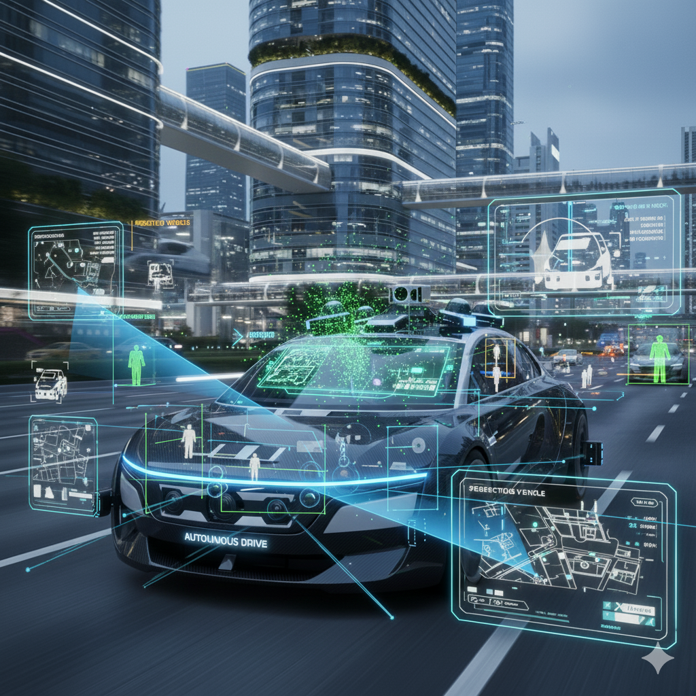
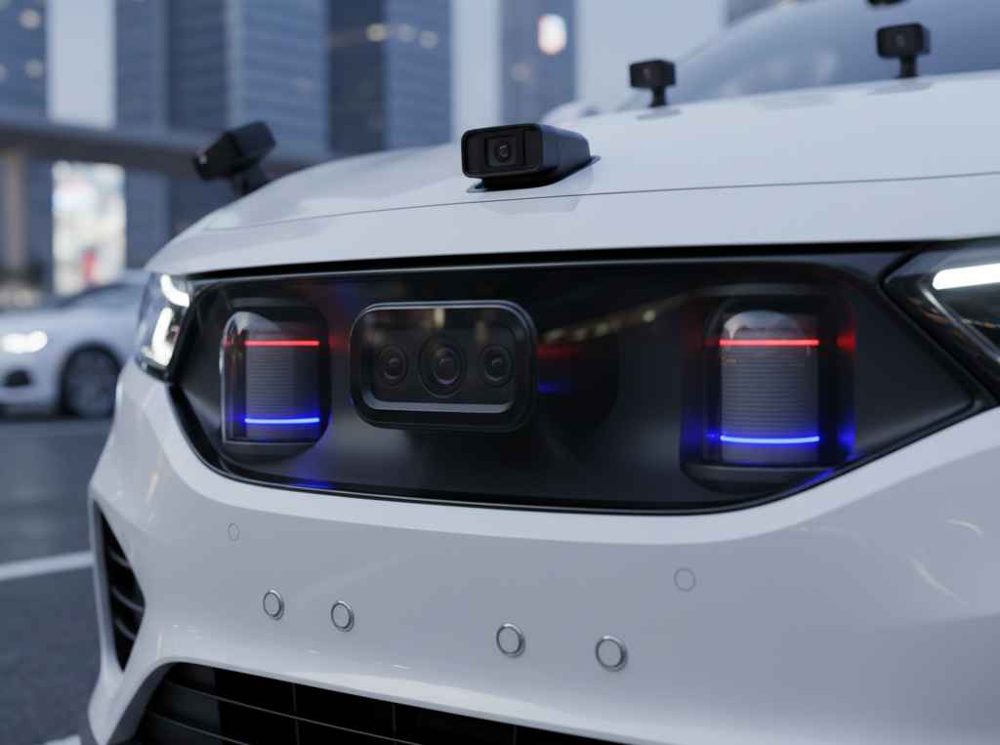
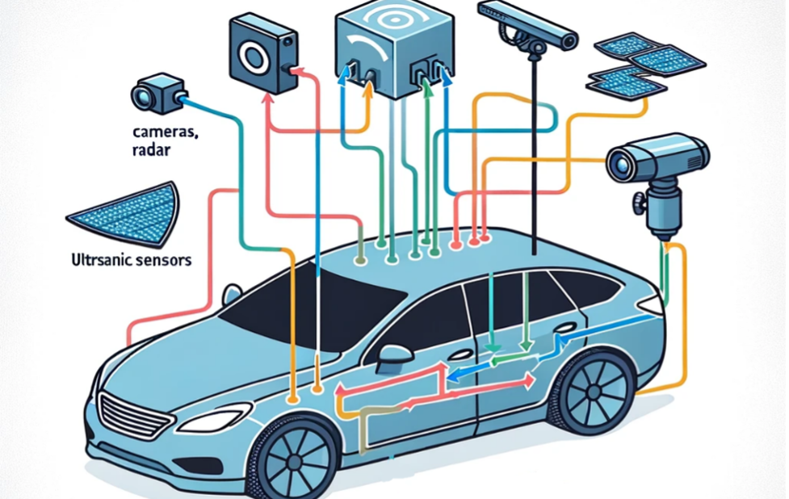
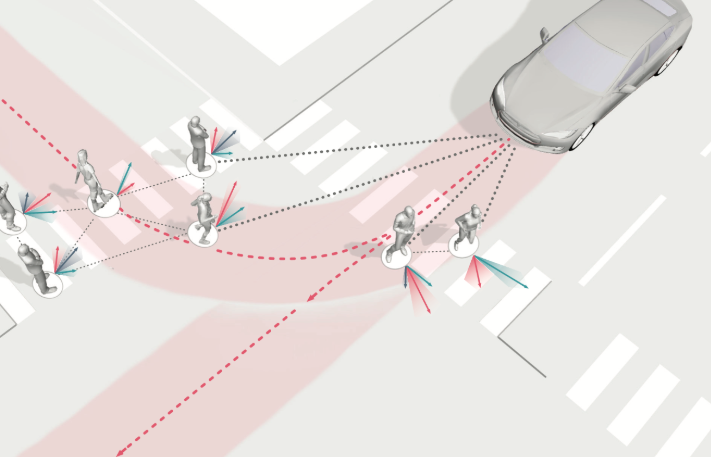
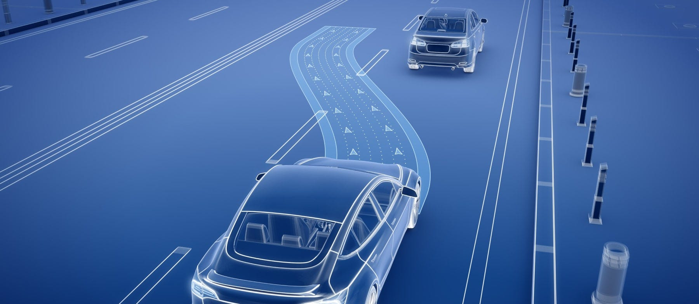
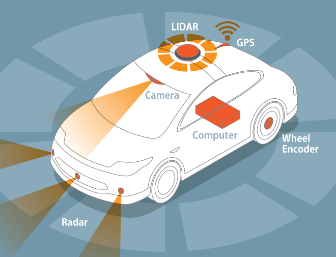

The fusion of vision and intelligence driving the future of mobility
🚗 Introduction
Computer vision serves as the “eyes” of autonomous vehicles, allowing them to perceive, interpret, and react to their surroundings in real time. By combining camera feeds, LiDAR point clouds, radar measurements, and AI algorithms, self-driving cars can detect objects, understand complex road environments, and make precise driving decisions. This seamless integration of sensors and intelligence enables vehicles to operate safely, efficiently, and reliably, paving the way for the future of autonomous transportation.

🔍 What Is Computer Vision in Autonomous Vehicles?
Computer vision is a branch of AI that enables machines to process, analyze, and understand visual information from the world. In autonomous vehicles, computer vision detects vehicles, pedestrians, cyclists, traffic signs, and road markings. It recognizes traffic patterns and unusual road events, like sudden obstacles or accidents. It also interprets environmental conditions such as rain, fog, snow, or shadows to adjust driving behavior. Computer vision works in coordination with other AI modules, including sensor fusion, path planning, and motion prediction, to enable full autonomy.

🧩 Key Stages of Computer Vision in Self-Driving Cars
Sensor Data Acquisition
Autonomous cars use multiple sensors to capture a detailed view of their surroundings. Cameras provide high-resolution color images for detecting road signs, pedestrians, lane markings, and traffic lights. LiDAR uses laser pulses to create 3D point clouds, measuring distances and mapping the environment accurately. Radar detects the speed and distance of objects and works well in poor visibility like fog or rain. Ultrasonic sensors are useful for detecting nearby obstacles during parking or low-speed maneuvers. GPS and IMU provide vehicle location and orientation data for navigation.

Data Preprocessing
Raw sensor data can be noisy or misaligned, so preprocessing is necessary. This includes noise reduction and filtering for clearer signals, calibration to align data from different sensors, and conversion of 3D LiDAR and radar data into usable formats for AI models. Image enhancement techniques are applied under low-light or adverse weather conditions.
Object Detection and Recognition
Autonomous vehicles rely heavily on AI and deep learning for object detection. Models like YOLO, Faster R-CNN, and SSD provide real-time detection with bounding boxes and classifications. Segmentation models such as U-Net or Mask R-CNN allow for semantic and instance segmentation, identifying lanes, sidewalks, drivable areas, and obstacles at the pixel level. 3D object detection combines LiDAR and camera data for precise distance estimation and object localization.
Sensor Fusion
Combining multiple sensor inputs improves perception accuracy. It creates a 3D model of the environment with better depth and spatial awareness, reduces errors from individual sensors, and enables robust detection of small, distant, or fast-moving objects.

Motion and Behavior Prediction
AI predicts how other road users will move by tracking vehicles, pedestrians, and cyclists over time. It estimates their trajectories to anticipate lane changes, turns, and crossings, allowing the autonomous vehicle to adjust speed, steering, and braking to avoid collisions.

Path Planning and Decision Making
Using processed data, AI decides the safest and most efficient actions. This includes lane selection, overtaking, merging, or turning. It dynamically adjusts speed based on traffic, pedestrians, and weather conditions and handles complex scenarios like roundabouts, intersections, or emergency vehicles.

🤖 How AI Enables Autonomous Driving
AI acts as the brain of autonomous vehicles, integrating perception, planning, and control. It interprets traffic lights, signs, lane markings, and obstacles, detects and predicts movements of dynamic objects to prevent collisions, and considers traffic laws, road conditions, and surrounding vehicles to plan optimal paths. AI then converts these decisions into real-time steering, acceleration, and braking commands.
🛡️ Safety Mechanisms in Computer Vision Systems
Safety is critical in self-driving cars. Multiple sensors provide redundancy so the system still works if one fails. Fail-safe mechanisms allow cars to safely stop or switch to manual mode in emergencies. Continuous monitoring ensures sensors are functioning correctly, and extensive simulation testing is conducted before deployment in real-world environments.

🧠 Training AI for Autonomous Vehicles
For safe and effective road navigation, autonomous cars mainly rely on artificial intelligence. Large volumes of data from cameras, LiDAR, radar, and GPS sensors must be fed into machine learning models in order to train AI for self-driving cars. By learning to identify objects like cars, pedestrians, traffic signs, and lanes, these models allow the car to make decisions about how to drive in real time. To guarantee accuracy and safety,
the training procedure incorporates data preprocessing, simulation driving, and real-world driving situations. The simulation driving process allows the AI to experience countless driving scenarios in a virtual environment, testing its reactions to various conditions and rare events without risk. The system can plan routes, anticipate possible hazards, and adjust to changing conditions
with the aid of sophisticated AI techniques like deep learning. AI-powered cars are steadily getting smarter, safer, and more dependable on our roads thanks to ongoing learning and updates.
🌐 The Future of Connected Self-Driving Cars
In the future, self-driving cars could be connected to a central cloud server through ultra-fast 5G networks, allowing vehicles to share information with each other almost instantly.
Each car would continuously send data from its cameras, LiDAR, and other sensors to the server. AI on the server would process this data to create a live, detailed 3D map of the road. Connected cars could then access this map in real time and anticipate what lies ahead — from traffic congestion, potholes, accidents, and obstacles to roadblocks and construction zones.
Beyond physical road conditions, cars could also receive centralized information such as speed limits, crowded areas like markets or festival zones, lane closures, and accident-prone spots. This allows vehicles to adjust their speed, lane, and route choices proactively, improving safety and efficiency.
If a road is blocked, a connected car can receive this information in advance and automatically replan its route to avoid delays, ensuring a smoother journey.
When a car takes a new route, it can benefit from pre-knowledge collected by other vehicles, meaning it knows what to expect even on roads it has never traveled before. Cars exploring unknown routes contribute their data back to the server, creating a continuously learning, connected network. The result is smarter, smoother, and safer driving for everyone on the road.